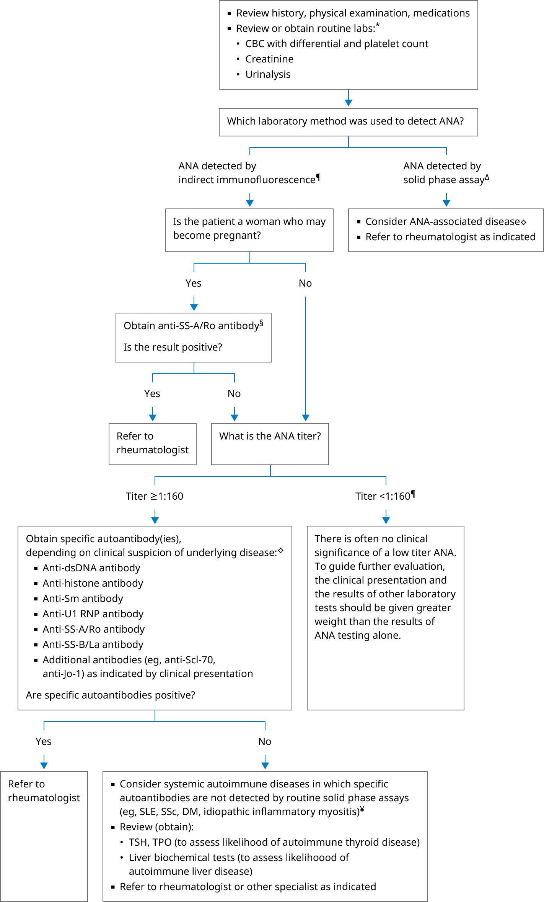

ANA: antinuclear antibody; CBC: complete blood count; DM: dermatomyositis; LE: lupus erythematosus; MCTD: mixed connective tissue disease; PM: polymyositis; RA: rheumatoid arthritis; SjD: Sjögren's disease; SLE: systemic lupus erythematosus; SSc: systemic sclerosis; TPO: thyroid peroxidase antibodies; TSH: thyroid stimulating hormone.
* Initial laboratory evaluation to identify occult cytopenia, hemolytic anemia, renal dysfunction, or nephritis that may accompany ANA-associated rheumatologic disease.
¶ The results of ANA measured by indirect immunofluorescence are reported as a titer and pattern of staining. An abnormal test result is the titer at which <5% of the serum samples from a healthy population produces a positive result (usually a dilution ≥1:160). For historical reasons, some laboratories continue to report dilutions of 1:40 and 1:80 as "positive", even though 30 and 15% (respectively) of the normal population will have ANAs at these dilutions.
Δ The results of ANA measured by solid phase assay are reported in international units and include specific autoantibody test results (eg, SS-A/Ro, SS-B/La, Sm). The presence of one or more specific autoantibodies is considered a positive test.
◊ Antibody-disease associations:
§ There is an increased risk of neonatal lupus syndrome in babies born to women with circulating anti-SS-A/Ro antibodies, even if the mother has no symptoms of an autoimmune disease.
¥ The panel of antigens used in routine solid phase assays does not detect all of the clinically relevant autoantibodies. A patient may therefore have a positive test for ANA by indirect immunofluorescence but negative results for a limited panel of specific autoantibodies. More specialized solid phase assays may be needed to detect autoantibodies in some patients with SLE, SSc, DM, and idiopathic inflammatory myositis.